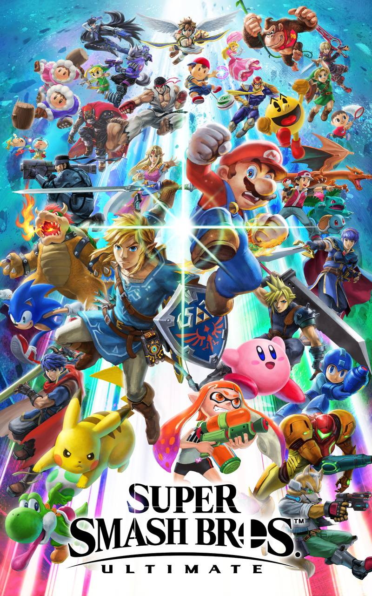

Post #1
Super Smash Bros (大乱闘スマッシュブラザーズ Dairantou Sumasshu Burazāzu?) é uma série de jogos de luta e ação com crossovers criada e dirigida por Masahiro Sakurai, na qual o jogador controla os personagens da franquia de jogos eletrônicos da Nintendo e outras franquias conhecidas, onde se enfrentam em batalhas. Os jogos da franquia podem ser jogados no modo para um jogador e multijogador local ou online.